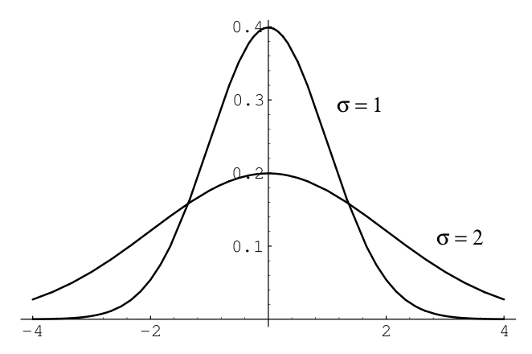
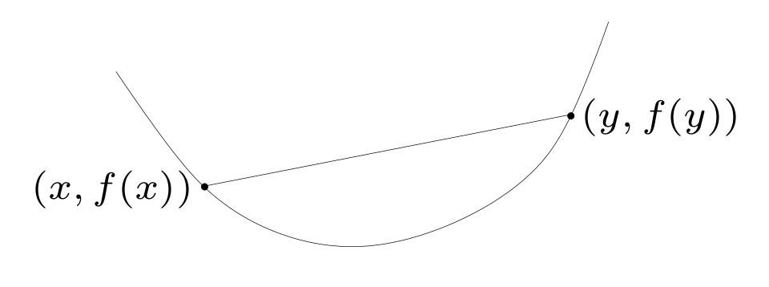
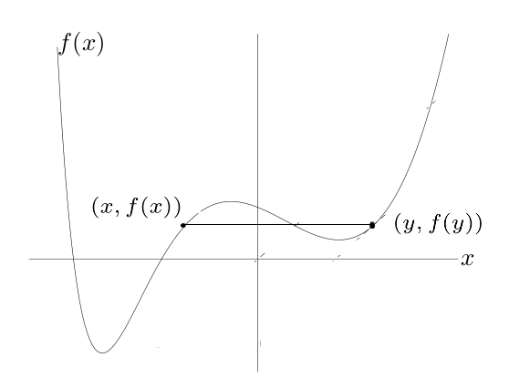
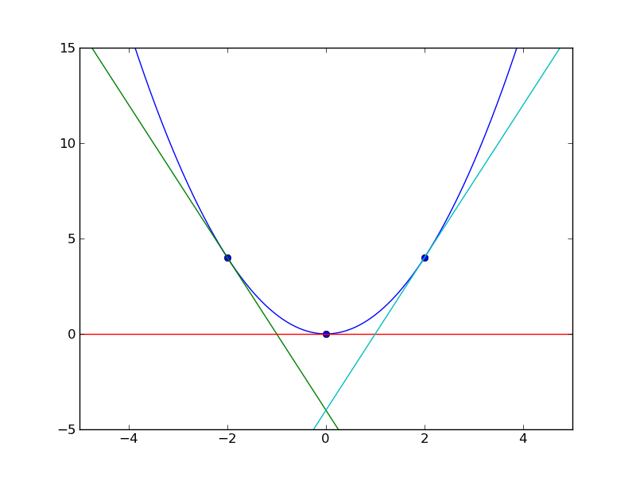
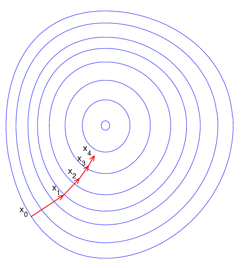
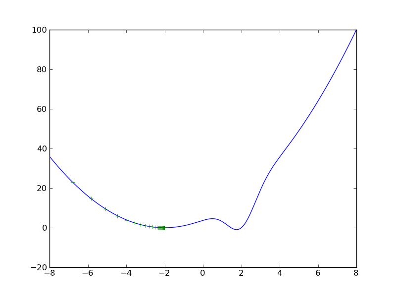
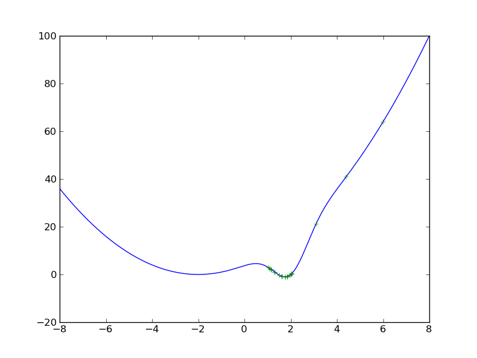

Basic Tutorials Day 0
Today’s assignment
In this class we will introduce several fundamental concepts needed further ahead. We start with an introduction to Python, the programming language we will use in the lab sessions, and to Matplotlib and Numpy, two modules for plotting and scientific computing in Python, respectively. Afterwards, we present several notions on probability theory and linear algebra. Finally, we focus on numerical optimization. The goal of this class is to give you the basic knowledge for you to understand the following lectures. We will not enter in too much detail in any of the topics.
Manually Installing the Tools in your own Computer
Desktops vs. Laptops
If you have decided to use one of our provided desktops, all
installation procedures have been carried out. You merely need to go to
the lxmls-toolkit-student folder inside your home directory
and start working! You may go directly to section 3. If you wish to use your own
laptop, you will need to install Python, the required Python libraries
and download the LXMLS code base. It is important that you do this as
soon as possible (before the school starts) to avoid unnecessary delays.
Please follow the install instructions.
Basic Install and Troubleshooting
To install, just follow the instructions in our Github repository for
the student version of our toolkit
The student branch contains the same code as
master branch, with some parts deleted, which you must
complete in the following exercises. The following install instructions
are same as the one on GitHub, provided here for completeness.
The basic install instructions use uv. If you are on
Linux or MacOS, install uv with
curl -LsSf https://astral.sh/uv/install.sh | sh If you are
on Windows, use search to find and start the CMD command
line utility. Then call on it
powershell -ExecutionPolicy ByPass -c "irm https://astral.sh/uv/install.ps1 | iex"
to install uv.
If you don’t have Python on your system or want to install a specific
version (the labs require the Python version to be between 3.9 and 3.12)
you can install it using uv:
uv python install 3.10
You can then install all required dependencies and create a virtual
environment using the one-liner: uv sync –extra cpu
If your device has access to an Nvidia GPU, you can replace
cpu with cu118, cu124, or
cu126 depending on the CUDA version your GPU supports. Use
nvidia-smi or nvcc –version to check the CUDA
version.
To activate your virtual environment with all installed dependencies
on Linux or MacOS use source .venv/bin/activate. To do so
on Windows use .venv\Scripts\activate
Check if your virtual environment is active by running
python –version && which python. This should
display the correct version of python with a path from within the
current virtual environment.
Deciding on the IDE and interactive shell to use
An Integrated Development Environment (IDE) includes a text editor and various tools to debug and interpret complex code.
Important: As the labs progress you will need an IDE, or at least a good editor and knowledge of pdb/ipdb. This will not be obvious the first days since we will be seeing simpler examples.
Easy IDEs to work with Python are PyCharm and Visual Studio Code, but feel free to use the software you feel more comfortable with. PyCharm and other well known IDEs like Spyder are provided with the Anaconda installation.
Besides an IDE, you will need an interactive command line to run commands. This is very useful to explore variables and functions and quickly debug the exercises. For the most complex exercises you will still need an IDE to modify particular segments of the provided code. As interactive command line we recommend the Jupyter notebook. This also comes installed with Anaconda and is part of the pip-installed packages. The Jupyter notebook is described in the next section. In case you run into problems or you feel uncomfortable with the Jupyter notebook you can use the simpler iPython command line.
Jupyter Notebook
Jupyter is a good choice for writing Python code. It is an interactive computational environment for data science and scientific computing, where you can combine code execution, rich text, mathematics, plots and rich media. The Jupyter Notebook is a web application that allows you to create and share documents, which contains live code, equations, visualizations and explanatory text. It is very popular in the areas of data cleaning and transformation, numerical simulation, statistical modeling, machine learning and so on. It supports more than 40 programming languages, including all those popular ones used in Data Science such as Python, R, and Scala. It can also produce many different types of output such as images, videos, LaTex and JavaScript. More over with its interactive widgets, you can manipulate and visualize data in real time.
The main features and advantages using the Jupyter Notebook are the following:
In-browser editing for code, with automatic syntax highlighting, indentation, and tab completion/introspection.
The ability to execute code from the browser, with the results of computations attached to the code which generated them.
Displaying the result of computation using rich media representations, such as HTML, LaTeX, PNG, SVG, etc. For example, publication-quality figures rendered by the matplotlib library, can be included inline.
In-browser editing for rich text using the Markdown markup language, which can provide commentary for the code, is not limited to plain text.
The ability to easily include mathematical notation within markdown cells using LaTeX, and rendered natively by MathJax.
The basic commands you should know are
| Esc | Enter command mode |
| Enter | Enter edit mode |
| up/down | Change between cells |
| Ctrl + Enter | Runs code on selected cell |
| Shift + Enter | Runs code on selected cell, jumps to next cell |
| restart button | Deletes all variables (useful for troubleshooting) |
A more detailed user guide can be found here:
http://jupyter-notebook-beginner-guide.readthedocs.io/en/latest/index.htmlSolving the Exercises
In the student branch we provide the solve.py script.
This can be used to solve the exercises of each day, e.g.,
python ./solve.py linear_classifierswhere the solvable days are: linear_classifiers, deep_learning, deep_learning_rnn, transformers. You can also undo the solving of an exercise by using
python ./solve.py --undo linear_classifiersNote that this script just downloads the master or student versions of certain files from the GitHub repository. It needs an Internet connection. Since some exercises require you to have the exercises of the previous days completed, the monitors may ask you to use this function. Important: Remember to save your own version of the code, otherwise it will be overwritten!
Python
Python Basics
Pre-requisites
At this point you should have installed the needed packages. You need also to feel comfortable with an IDE to edit code and an interactive command line. See previous sections for the details. Your work folder will be
lxmls-toolkit-studentfrom there, start your interactive command line of choosing, e.g.,
jupyter-notebookand proceed with the following sections.
Running Python code
We will start by creating and running a dummy program in Python which simply prints the “Hello World!” message to the standard output (this is usually the first program you code when learning a new programming language). There are two main ways in which you can run code in Python:
- From a file
-
– Create a file named
yourfile.pyand write your program in it, using the IDE of your choice, e.g., PyCharm:print('Hello World!')After saving and closing the file, you can run your code by using the run functionality in your IDE. If you wish to run from a command line instead do
python yourfile.pyThis will run the program and display the message “Hello World!”. After that, the control will return to the command line or IDE.
- In the interactive command line
-
– Start your preferred interactive command line, e.g., Jupyter-notebook. There, you can run Python code by simply writing it and pressing enter (ctr+enter in Jupyter).
In[]: print("Hello, World!") Out[]: Hello, World!However, you can also run Python code written into a file.
In[]: run ./yourfile.py Out[]: Hello, World!
Keep in mind that you can easily switch between these two modes. You can quickly test commands directly in the command line and, e.g., inspect variables. Larger sections of code can be stored and run from files.
Help and Documentation
There are several ways to get help on Jupyter:
Adding a question mark to the end of a function or variable and pressing Enter brings up associated documentation. Unfortunately, not all packages are well documented. Numpy and matplotlib are pleasant exceptions;
help(’if’)gets the online documentation for theifkeyword;help(), enters the help system.When at the help system, type
qto exit.
Python by Example
Basic Math Operations
Python supports all basic arithmetic operations, including exponentiation. For example, the following code:
print(3 + 5)
print(3 - 5)
print(3 * 5)
print(3 / 5)
print(3 ** 5)will produce the following output:
8
-2
15
0.6
243Note that division always returns a float in Python 3:
3 / 5 gives 0.6. To perform integer (floor)
division, use //: 3 // 5 gives
0.
Also, notice that the symbol ** is used as the
exponentiation operator, unlike other languages that use ^.
In Python, ^ means bitwise XOR, so double-check your code
if it uses exponentiation and gives unexpected results.
Data Structures
In Python, you can create lists of items with the following syntax:
countries = ['Portugal','Spain','United Kingdom']A string should be surrounded by either apostrophes (’) or quotes (“). You can access a list with the following:
len(L), which returns the number of items in L;L[i], which returns the item at index \(i\) (the first item has index 0);L[i:j], which returns a new list, containing all the items between indexes \(i\) and \(j-1\), inclusively.
Use L[i:j] to return the countries in the Iberian Peninsula.
Loops and Indentation
A loop allows a section of code to be repeated a certain number of
times, until a stop condition is reached. For instance, when the list
you are iterating over has reached its end or when a variable has
reached a certain value (in this case, you should not forget to update
the value of that variable inside the code of the loop). In Python you
have while and for loop statements. The
following two example programs output exactly the same using both
statements: the even numbers from 2 to 8.
i = 2
while i < 10:
print(i)
i += 2 for i in range(2,10,2):
print(i)You can copy and run this in Jupyter. Alternatively you can write
this into your yourfile.py file and run it. Do you notice
something? It is possible that the code did not act as expected or maybe
an error message popped up. This brings us to an important aspect of
Python: indentation. Indentation is the number of blank
spaces at the leftmost of each command. This is how Python
differentiates between blocks of commands inside and outside of a
statement, e.g., while or for. All commands
within a statement have the same number of blank spaces at their
leftmost. For instance, consider the following code:
a=1
while a <= 3:
print(a)
a += 1and its output:
1
2
3Can you then predict the output of the following code?:
a=1
while a <= 3:
print(a)
a += 1Bear in mind that indentation is often the main source of errors when
starting to work with Python. Try to get used to it as quickly as
possible. It is also recommendable to use a text editor that can display
all characters e.g. blank space, tabs, since these characters can be
visually similar but are considered different by Python. One of the most
common mistakes by newcomers to Python is to have their files indented
with spaces on some lines and with tabs on other lines. Visually it
might appear that all lines have proper indentation, but you will get an
IndentationError message if you try it. The recommended1 way is to use 4 spaces for each
indentation level.
Control Flow
The if statement allows to control the flow of your
program. The next program outputs a greeting that depends on the time of
the day.
hour = 16
if hour < 12:
print('Good morning!')
elif hour >= 12 and hour < 20:
print('Good afternoon!')
else:
print('Good evening!')Functions
A function is a block of code that can be reused to perform a similar action. The following is a function in Python.
def greet(hour):
if hour < 12:
print('Good morning!')
elif hour >= 12 and hour < 20:
print('Good afternoon!')
else:
print('Good evening!')You can write this command into Jupyter directly or write it into a
file which you then run in Jupyter. Once you do this the function will
be available for you to use. Call the function greet with
different hours of the day (for example, type greet(16))
and see that the program will greet you accordingly.
Note that the previous code allows the hour to be less than 0 or more than 24. Change the code in order to indicate that the hour given as input is invalid. Your output should be something like:
greet(50)
Invalid hour: it should be between 0 and 24.
greet(-5)
Invalid hour: it should be between 0 and 24.Profiling
If you are interested in checking the performance of your program,
you can use the command %prun in Jupyter. For example:
def myfunction(x):
...
%prun myfunction(22)The output of the %prun command will show the following
information for each function that was called during the execution of
your code:
ncalls: The number of times this function was called. If this function was used recursively, the output will be two numbers; the first one counts the total function calls with recursions included, the second one excludes recursive calls.tottime: Total time spent in this function, excluding the time spent in other functions called from within this function.percall: Same astottime, but divided by the number of calls.cumtime: Same astottime, but including the time spent in other functions called from within this function.percall: Same ascumtime, but divided by the number of calls.filename:lineno(function): Tells you where this function was defined.
Debugging in Python
During the lab sessions, there will be situations in which we will use and extend modules that involve elaborated code and statements, like classes and nested functions. Although desirable, it should not be necessary for you to fully understand the whole code to carry out the exercises. It will suffice to understand the algorithm as explained in the theoretical part of the class and the local context of the part of the code where we will be working. For this to be possible is very important that you learn to use an IDE.
An alternative to IDEs, that can also be useful for quick debugging in Jupyter, is the pdb module. This will stop the execution at a given point (called break-point) to get a quick glimpse of the variable structures and to inspect the execution flow of your program. The ipdb is an improved version of pdb that has to be installed separately. It provides additional functionalities like larger context windows, variable auto complete and colors. Unfortunately ipdb has some compatibility problems with Jupyter. We therefore recommend to use ipdb only in spartan configurations such as vim+ipdb as IDE.
In the following example, we use this module to inspect the
greet function. Since Python 3.7, the built-in
breakpoint() function is the preferred way to set a
breakpoint — it calls pdb.set_trace() by default but can be
configured to use other debuggers:
def greet(hour):
if hour < 12:
print('Good morning!')
elif hour >= 12 and hour < 20:
print('Good afternoon!')
else:
breakpoint() # equivalent to: import pdb; pdb.set_trace()
print('Good evening!')Load the new definition of the function by writing this code in a
file or a Jupyter cell and running it. Now, if you try
greet(50) the code execution should stop at the place where
you located the break-point (that is, in the
print(’Good evening!’) statement). You can now run new
commands or inspect variables. For this purpose there are a number of
commands you can use, but we provide here a short table with the most
useful ones:
| (h)elp | Starts the help menu |
| (p)rint | Prints a variable |
| (p)retty(p)rint | Prints a variable, with line break (useful for lists) |
| (n)ext line | Jumps to next line |
| (s)tep | Jumps inside of the function we stopped at |
| c(ont(inue)) | Continues execution until finding breakpoint or finishing |
| (r)eturn | Continues execution until current function returns |
| b(reak) n | Sets a breakpoint in in line n |
| b(reak) n, condition | Sets a conditional breakpoint in in line n |
| l(ist) [n], [m] | Prints 11 lines around current line. Optionally starting in line n or between lines n, m |
| w(here) | Shows which function called the function we are in, and upwards (stack) |
| u(p) | Goes one level up the stack (frame of the function that called the function we are on) |
| d(down) | Goes one level down the stack |
| blank | Repeat the last command |
| expression | Executes the python expression as if it was in current frame |
Getting back to our example, we can type n(ext) once to execute the line we stopped at
pdb> n
> ./lxmls-toolkit/yourfile.py(8)greet()
7 import pdb; pdb.set_trace()
----> 8 print('Good evening!') Now we can inspect the variable hour using the
p(retty)p(rint) option
pdb> pp hour
50From here we could keep advancing with the n(ext) option or set a b(reak) point and type c(ontinue) to jump to a new position. We could also execute any python expression which is valid in the current frame (the function we stopped at). This is particularly useful to find out why code crashes, as we can try different alternatives without the need to restart the code again.
Exceptions
Occasionally, a syntactically correct code statement may produce an error when an attempt is made to execute it. These kind of errors are called exceptions in Python. For example, try executing the following:
10/0A ZeroDivisionError exception was raised, and no output was returned. Exceptions can also be forced to occur by the programmer, with customized error messages .
raise ValueError("Invalid input value.")Rewrite the code in Exercise 0.3 in order to raise a ValueError exception when the hour is less than 0 or more than 24.
Handling of exceptions is made with the try statement:
while True:
try:
x = int(input("Please enter a number: "))
break
except ValueError:
print("Oops! That was no valid number. Try again...")It works by first executing the try clause. If no exception occurs, the except clause is skipped; if an exception does occur, and if its type matches the exception named in the except keyword, the except clause is executed; otherwise, the exception is raised and execution is aborted (if it is not caught by outer try statements).
Extending basic Functionalities with Modules
In Python you can load new functionalities into the language by using
the import, from and as keywords.
For example, we can load the numpy module as
import numpy as npThen we can run the following on the Jupyter command line:
np.var?
np.random.normal?The import will make the numpy tools available through the alias
np. This shorter alias prevents the code from getting too
long if we load lots of modules. The first command will display the help
for the method numpy.var using the previously commented
symbol ?. Note that in order to display the help you need
the full name of the function including the module name or alias.
Modules have also submodules that can be accessed the same way, as shown
in the second example.
Organizing your Code with your own modules
Creating you own modules is extremely simple. you can for example create the file in your work directory
my_tools.pyand store there the following code
def my_print(input):
print(input)From Jupyter you can now import and use this tool as
import my_tools
my_tools.my_print("This works!") Important: When you modify a module, you need to reload the notebook page for the changes to take effect. Autoreload is set by default in the schools notebooks.
for the latter. Other ways of importing one or all the tools from a module are
from my_tools import my_print # my_print directly accesible in code
from my_tools import * # will make all functions in my_tools accessibleHowever, this makes reloading the module more complicated. You can also store tools ind different folders. For example, if you store the previous example in the folder
day0_toolsand store inside an empty file called
__init__.pythen the following import will work
import day0_tools.my_toolsMatplotlib – Plotting in Python
Matplotlib2 is a plotting library for Python. It supports 2d and 3d plots of various forms. It can show them interactively or save them to a file (several output formats are supported).
import numpy as np
import matplotlib.pyplot as plt
X = np.linspace(-4, 4, 1000)
plt.plot(X, X**2*np.cos(X**2))
plt.savefig("simple.pdf")Try running the following on Jupyter, which will introduce you to some of the basic numeric and plotting operations.
# This will import the numpy library
# and give it the np abbreviation
import numpy as np
# This will import the plotting library
import matplotlib.pyplot as plt
# Linspace will return 1000 points,
# evenly spaced between -4 and +4
X = np.linspace(-4, 4, 1000)
# Y[i] = X[i]**2
Y = X**2
# Plot using a red line ('r')
plt.plot(X, Y, 'r')
# arange returns integers ranging from -4 to +4
# (the upper argument is excluded!)
Ints = np.arange(-4,5)
# We plot these on top of the previous plot
# using blue circles (o means a little circle)
plt.plot(Ints, Ints**2, 'bo')
# You may notice that the plot is tight around the line
# Set the display limits to see better
plt.xlim(-4.5,4.5)
plt.ylim(-1,17)
plt.show()Numpy – Scientific Computing with Python
Numpy3 is a library for scientific computing with Python.
Multidimensional Arrays
The main object of numpy is the multidimensional array. A multidimensional array is a table with all elements of the same type and can have several dimensions. Numpy provides various functions to access and manipulate multidimensional arrays. In one dimensional arrays, you can index, slice, and iterate as you can with lists. In a two dimensional array M, you can perform these operations along several dimensions.
M[i,j], to access the item in the \(i^{th}\) row and \(j^{th}\) column;
M[i:j,:], to get the all the rows between the \(i^{th}\) and \(j-1^{th}\);
M[:,i], to get the \(i^{th}\) column of M.
Again, as it happened with the lists, the first item of every column and every row has index 0.
import numpy as np
A = np.array([
[1,2,3],
[2,3,4],
[4,5,6]])
A[0,:] # This is [1,2,3]
A[0] # This is [1,2,3] as well
A[:,0] # this is [1,2,4]
A[1:,0] # This is [ 2, 4 ]. Why?
# Because it is the same as A[1:n,0] where n is the size of the array.Mathematical Operations
There are many helpful functions in numpy. For basic mathematical
operations, we have np.log, np.exp,
np.cos,…with the expected meaning. These operate both on
single arguments and on arrays (where they will behave element
wise).
import matplotlib.pyplot as plt
import numpy as np
X = np.linspace(0, 4 * np.pi, 1000)
C = np.cos(X)
S = np.sin(X)
plt.plot(X, C)
plt.plot(X, S)Other functions take a whole array and compute a single value from
it. For example, np.sum, np.mean,…These are
available as both free functions and as methods on arrays.
import numpy as np
A = np.arange(100)
# These two lines do exactly the same thing
print(np.mean(A))
print(A.mean())
C = np.cos(A)
print(C.ptp())Run the above example and lookup the ptp function/method
(use the ? functionality in Jupyter).
Consider the following approximation to compute an integral
\[\int_0^{1} f(x)dx \approx \sum_{i = 0}^{999} \frac{f(i/1000)}{1000}.\]
Use numpy to implement this for \(f(x) = x^2\). You should not need to use any loops. The exact value is \(1/3\). How close is the approximation?
Essential Linear Algebra
Linear Algebra provides a compact way of representing and operating on sets of linear equations.
\[\sysdelim\{.\systeme{4x_{1}-5x_{2}=-13,-2x_{1}+3x_{2}=9}\]
This is a system of linear equations in 2 variables. In matrix notation we can write the system more compactly as \[\textbf{A}\textbf{x}=\textbf{b}\] with \[\textbf{A}= \left[ \begin{array}{cc} 4 & -5 \\ -2 & 3 \\ \end{array} \right], \text{ } \textbf{b}= \left[ \begin{array}{c} -13 \\ 9 \\ \end{array}\right]\]
Notation
We use the following notation:
By \(\textbf{A} \in \mathbb{R}^{m \times n}\), we denote a matrix with \(m\) rows and \(n\) columns, where the entries of A are real numbers.
By \(\textbf{x} \in \mathbb{R}^{n}\), we denote a vector with \(n\) entries. A vector can also be thought of as a matrix with \(n\) rows and \(1\) column, known as a column vector. A row vector — a matrix with 1 row and \(n\) columns is denoted as \(\textbf{x}^{T}\), the transpose of \(\textbf{x}\).
The \(i\)th element of a vector \(\textbf{x}\) is denoted \(x_{i}\):
\[\textbf{x} = \left[\begin{array}{c} x_{1} \\ x_{2} \\ \vdots \\ x_{n} \end{array}\right].\]
In the rest of the school we will represent both matrices and vectors as numpy arrays. You can create arrays in different ways, one possible way is to create an array of zeros.
import numpy as np
m = 3
n = 2
a = np.zeros([m,n])
print(a)
[[ 0. 0.]
[ 0. 0.]
[ 0. 0.]]You can check the shape and the data type of your array using the following commands:
print(a.shape)
(3, 2)
print(a.dtype.name)
float64This shows you that “a” is a \(3 \times 2\) array of type float64. By default, arrays contain 64 bit floating point numbers. You can specify the particular array type by using the keyword dtype.
a = np.zeros([m,n],dtype=int)
print(a.dtype)
int64You can also create arrays from lists of numbers:
a = np.array([[2,3],[3,4]])
print(a)
[[2 3]
[3 4]]There are many more ways to create arrays in numpy and we will get to see them as we progress in the classes.
Some Matrix Operations and Properties
Product of two matrices \(\textbf{A} \in \mathbb{R}^{m\times n}\) and \(\textbf{B} \in \mathbb{R}^{n\times p}\) is the matrix \(\textbf{C}=\textbf{AB} \in \mathbb{R}^{m\times p}\), where \[C_{ij}=\sum\limits_{k=1}^{n}A_{ik}B_{kj}.\]
Exercise 0.9You can multiply two matrices by looping over both indexes and multiplying the individual entries.
a = np.array([[2,3],[3,4]]) b = np.array([[1,1],[1,1]]) a_dim1, a_dim2 = a.shape b_dim1, b_dim2 = b.shape c = np.zeros([a_dim1,b_dim2]) for i in range(a_dim1): for j in range(b_dim2): for k in range(a_dim2): c[i,j] += a[i,k]*b[k,j] print(c)This is, however, cumbersome and inefficient. Numpy supports matrix multiplication with the dot function:
d = np.dot(a,b) print(d)Important note: with numpy, you must use
dotto get matrix multiplication, the expression a * b denotes element-wise multiplication.Matrix multiplication is associative: \((\textbf{AB})\textbf{C}= \textbf{A}(\textbf{BC})\).
Matrix multiplication is distributive: \(\textbf{A}(\textbf{B}+\textbf{C})= \textbf{AB} + \textbf{AC}\).
Matrix multiplication is (generally) not commutative : \(\textbf{AB} \neq \textbf{BA}\).
Given two vectors \(\textbf{x},\textbf{y} \in \mathbb{R}^{n}\) the product \(\textbf{x}^{T}\textbf{y}\), called inner product or dot product, is given by \[\textbf{x}^{T}\textbf{y} \in \mathbb{R} = \left[\begin{array}{cccc} x_{1}&x_{2}&\ldots&x_{n}\end{array}\right] \left[\begin{array}{c} y_{1} \\ y_{2} \\ \vdots \\ y_{n} \end{array}\right] = \sum\limits_{i=1}^{n}x_{i}y_{i}.\]
a = np.array([1,2]) b = np.array([1,1]) np.dot(a,b)Given vectors \(\textbf{x} \in \mathbb{R}^{m}\) and \(\textbf{y} \in \mathbb{R}^{n}\), the outer product \(\textbf{xy}^{T} \in \mathbb{R}^{m\times n}\) is a matrix whose entries are given by \(({xy}^{T})_{ij}=x_{i}y_{j}\),
\[\textbf{xy}^{T} \in \mathbb{R}^{m\times n} = \left[\begin{array}{c} x_{1} \\ x_{2} \\ \vdots \\ x_{m}\end{array}\right] \left[\begin{array}{cccc} y_{1} & y_{2} & \ldots & y_{n} \end{array}\right] = \left[\begin{array}{cccc} x_{1}y_{1} & x_{1}y_{2} & \ldots & x_{1}y_{n} \\ x_{2}y_{1} & x_{2}y_{2} & \ldots & x_{2}y_{n} \\ \vdots & \vdots & \ddots & \vdots \\ x_{m}y_{1} & x_{m}y_{2} & \ldots & x_{m}y_{n} \\ \end{array}\right].\]
np.outer(a,b) array([[1, 1], [2, 2]])The identity matrix, denoted \(\textbf{I}\in \mathbb{R}^{n\times n}\), is a square matrix with ones on the diagonal and zeros everywhere else. That is, \[I_{ij}=\left\{\begin{array}{cc} 1 & i=j \\ 0 & i\neq j \end{array}\right.\] It has the property that for all \(\textbf{A} \in \mathbb{R}^{n \times n}\), \(\textbf{AI} = \textbf{A} = \textbf{IA}.\)
I = np.eye(2) x = np.array([2.3, 3.4]) print(I) print(np.dot(I,x)) [[ 1., 0.], [ 0., 1.]] [2.3, 3.4]A diagonal matrix is a matrix where all non-diagonal elements are \(0\).
The transpose of a matrix results from “’flipping” the rows and columns. Given a matrix \(\textbf{A} \in \mathbb{R}^{m\times n}\), the transpose \(\textbf{A}^{T} \in \mathbb{R}^{n\times m}\) is the \(n \times m\) matrix whose entries are given by \((A^{T})_{ij}= A_{ji}\).
Also, \(\begin{array}{ccccc}(\textbf{A}^{T})^{T}= \textbf{A}; & & (\textbf{AB})^{T}=\textbf{B}^{T}\textbf{A}^{T}; & & (\textbf{A}+\textbf{B})^{T}= \textbf{A}^{T}+\textbf{B}^{T} \end{array}\)
In numpy, you can access the transpose of a matrix as the
Tattribute:A = np.array([ [1, 2], [3, 4] ]) print(A.T)A square matrix \(\textbf{A} \in \mathbb{R}^{n\times n}\) is symmetric if \(\textbf{A}=\textbf{A}^{T}\).
The trace of a square matrix \(\textbf{A} \in \mathbb{R}^{n\times n}\) is the sum of the diagonal elements, tr\((\textbf{A})= \sum\limits_{i=1}^{n} A_{ii}\)
Norms
The norm of a vector is informally the measure of the “length” of the vector. The commonly used Euclidean or \(\ell_{2}\) norm is given by \[\|\textbf{x}\|_{2}=\sqrt{\sum\limits_{i=1}^{n} x_{i}^{2}}.\]
More generally, the \(\ell_{p}\) norm of a vector \(\textbf{x} \in \mathbb{R}^{n}\), where \(p \geq 1\) is defined as
\[\|\textbf{x}\|_{p}=\left(\sum\limits_{i=1}^{n}|x_{i}|^{p}\right)^{1/p}.\] Note: \(\begin{array}{ccc} \ell_{1} \text{ norm}: \|\textbf{x}\|_{1} = \sum\limits_{i=1}^{n} |x_{i}| && \ell_{\infty} \text{ norm}: \|\textbf{x}\|_{\infty} = \max\limits_{i} |x_{i}| \end{array}\).
Linear Independence, Rank, and Orthogonal Matrices
A set of vectors \(\{\textbf{x}_{1},\textbf{x}_{2},\ldots,\textbf{x}_{n}\} \subset \mathbb{R}^{m}\) is said to be (linearly) independent if no vector can be represented as a linear combination of the remaining vectors. Conversely, if one vector belonging to the set can be represented as a linear combination of the remaining vectors, then the vectors are said to be linearly dependent. That is, if \[\textbf{x}_{j}=\sum\limits_{i\neq j}\alpha_{i}\textbf{x}_{i}\] for some \(j \in \{1,\ldots,n\}\) and some scalar values \(\alpha_{1}, \ldots, \alpha_{i-1}, \alpha_{i+1}, \ldots, \alpha_{n} \in \mathbb{R}\).
The rank of a matrix is the number of linearly independent columns, which is always equal to the number of linearly independent rows.
For \(\textbf{A} \in R^{m\times n}\), rank\((\textbf{A}) \leq\) min\((m,n)\). If rank\((\textbf{A})=\) min\((m,n)\), then \(\textbf{A}\) is said to be full rank.
For \(\textbf{A} \in R^{m\times n}\), rank\((\textbf{A})=\) rank\((\textbf{A}^{T})\).
For \(\textbf{A} \in R^{m\times n}\), \(\textbf{B} \in R^{n\times p}\), rank\((\textbf{AB}) \leq\) min\((\)rank\((\textbf{A})\),rank\((\textbf{B})\)).
For \(\textbf{A},\textbf{B} \in R^{m\times n}\), rank\((\textbf{A}+\textbf{B}) \leq\) rank\((\textbf{A})\) + rank\((\textbf{B})\).
Two vectors \(\textbf{x},\textbf{y} \in \mathbb{R}^{n}\) are orthogonal if \(\textbf{x}^{T}\textbf{y}=0\). A square matrix \(\textbf{U} \in \mathbb{R}^{n\times n}\) is orthogonal if all its columns are orthogonal to each other and are normalized (\(\|\textbf{x}\|_{2} = 1\)), It follows that \[\textbf{U}^{T}\textbf{U}=\textbf{I}=\textbf{UU}^{T}.\]
Probability Theory
Probability is the most used mathematical language for quantifying uncertainty. The sample space \(\mathcal{X}\) is the set of possible outcomes of an experiment. Events are subsets of \(\mathcal{X}\).
[discrete space] Let H denote “heads” and T denote “tails.” If we toss a coin twice, then \(\mathcal{X}=\{ HH, HT, TH, TT\}\). The event that the first toss is heads is \(A= \left\{HH, HT \right\}\).
A sample space can also be continuous (eg., \(\mathcal{X}= \mathbb{R}\)). The union of events \(A\) and \(B\) is defined as \(A \bigcup B = \{ \omega \in \mathcal{X}\,\,|\,\, \omega \in A \vee \omega \in B\}\). If \(A_1\), \(\ldots\), \(A_n\) is a sequence of sets then \(\bigcup\limits_{i=1}^{n}A_{i} = \{ \omega \in \mathcal{X}\,\,|\,\, \omega \in A_{i} \text{ for at least one i}\}\). We say that \(A_1\), \(\ldots\), \(A_n\) are disjoint or mutually exclusive if \(A_{i} \cap A_{j} = \varnothing\) whenever \(i \neq j\).
We want to assign a real number \(P(A)\) to every event \(A\), called the probability of \(A\). We also call \(P\) a probability distribution or probability measure.
A function \(P\) that assigns a real
number \(P(A)\) to each event A is a
probability distribution or a
probability measure if it satisfies the
three following axioms:
Axiom 1: \(P(A) \geq 0\) for
every A
Axiom 2: \(P(\mathcal{X}) = 1\)
Axiom 3: If \(A_1\), \(\ldots\), \(A_n\) are disjoint then \[P\left(\bigcup\limits_{i=1}^{n} A_{i}\right) =
\sum\limits_{i=1}^{n} P(A_{i}).\]
One can derive many properties of \(P\) from these axioms: \[\begin{aligned} P(\varnothing) &= &0 \\ A \subseteq B &\Rightarrow &P(A) \leq P(B) \\ 0 \leq &P(A) &\leq 1 \\ P(A') &= &1 - P(A) \hspace{0.2in}(\text{A' is the complement of A}) \\ P(A \cup B) &=& P(A) + P(B) - P(A \cap B) \\ A \cap B = \phi &\Rightarrow &P\left( A \cup B\right) = P(A) + P(B).\end{aligned}\]
An important case is when events are
independent, this is also a usual
approximation which lends several practical advantages for the
computation of the joint probability.
Two events \(A\) and \(B\) are independent if \[P(AB) = P(A)P(B)\] often denoted as \(A \independent B\). A set of events \(\{A_{i}: i \in I\}\) is independent if \[P\left(\bigcap\limits_{i \in J} A_{i}\right) = \prod\limits_{i \in J}P(A_{i})\] for every finite subset J of I.
For events \(A\) and \(B\), where \(P(B) > 0\), the conditional probability of \(A\) given that \(B\) has occurred is defined as:
\[P(A|B)=\frac{P(AB)}{P(B)}. \label{eq:condprob}\]
Events \(A\) and \(B\) are independent if and only if \(P(A|B)=P(A)\). This follows from the definitions of independence and conditional probability.
A preliminary result that forms the basis for the famous Bayes’ theorem is the law of total probability which states that if \(A_{1},\ldots,A_{k}\) is a partition of \(\mathcal{X}\), then for any event B, \[P(B)=\sum_{i=1}^{k}P(B|A_{i})P(A_{i}). \label{eq:totprob}\]
Using Equations [eq:condprob] and [eq:totprob], one can derive the Bayes’ theorem.
(Bayes’ Theorem) Let \(A_{1}, \ldots A_{k}\) be a partition of \(\mathcal{X}\) such that \(P(A_{i}) > 0\) for each i. If \(P(B) > 0\) then, for each \(i=1,\ldots, k,\) \[P(A_{i}|B)=\frac{P(B|A_{i})P(A_{i})}{\sum_{j}P(B|A_{j})P(A_{j})}.\]
\(P(A_{i})\) is called the prior probability of \(A_i\) and \(P(A_{i}|B)\) is the posterior probability of \(A_i\).
In Bayesian Statistical Inference, the Bayes’ theorem is used to compute the estimates of distribution parameters from data. Here, prior is the initial belief about the parameters, likelihood is the distribution function of the parameter (usually trained from data) and posterior is the updated belief about the parameters.
Probability distribution functions
A random variable is a mapping \(X:\mathcal{X} \rightarrow \mathbb{R}\) that assigns a real number \(X(\omega)\) to each outcome \(\omega\). Given a random variable X, an important function called the cumulative distributive function (or distribution function) is defined as:
The cumulative distribution function CDF \(F_{X}: \mathbb{R} \rightarrow [0,1]\) of a random variable \(X\) is defined by \(F_X(x) = P(X \leq x)\).
The CDF is important because it captures the complete information about the random variable. The CDF is right-continuous, non-decreasing and is normalized (lim\(_{x\rightarrow -\infty} F(x) = 0\) and lim\(_{x\rightarrow \infty} F(x)=1\)).
[discrete CDF] Flip a fair coin twice and let X be the random variable indicating the number of heads. Then \(P(X=0)=P(X=2)= 1/4\) and \(P(X=1)=1/2\). The distribution function is \[F_{X}(x)=\left\{\begin{array}{cc} 0 & x<0\\ 1/4 & 0 \leq x < 1 \\ 3/4 & 1 \leq x < 2 \\ 1 & x \geq 2. \end{array}\right.\]
\(X\) is discrete if it takes countable many values \(\{x_{1},x_{2},\ldots\}\). We define the probability function or probability mass function for \(X\) by \[f_{X}(x)= P (X=x).\]
A random variable \(X\) is continuous if there exists a function \(f_{X}\) such that \(f_{X} \geq 0\) for all \(x\), \(\int\limits_{-\infty}^{\infty} f_{X}(x)dx = 1\) and for every \(a\leq b\) \[P(a < X < b) = \int\limits_{a}^{b}f_{X}(x)dx.\] The function \(f_{X}\) is called the probability density function (PDF). We have that \[F_{X}(x) = \int\limits_{-\infty}^{x}f_{X}(t)dt\]
and \(f_{X}(x)=F_{X}^{'}(x)\) at all points \(x\) at which \(F_{X}\) is differentiable.
A discussion of a few important distributions and related properties:
Bernoulli
The Bernoulli distribution is a discrete probability distribution that takes value 1 with the success probability \(p\) and 0 with the failure probability \(q=1-p\). A single Bernoulli trial is parametrized with the success probability \(p\), and the input \(k\in \{0,1\}\) (1=success, 0=failure), and can be expressed as \[\label{bernoulli-eq} f(k;p) = p^kq^{1-k} = p^k(1-p)^{1-k}\]
Binomial
The probability distribution for the number of successes in \(n\) Bernoulli trials is called a Binomial distribution, which is also a discrete distribution. The Binomial distribution can be expressed as exactly \(j\) successes is \[f(j,n;p)= \left(\begin{array}{c} n \\ j \end{array}\right) p^{j}q^{n-j} = \left(\begin{array}{c} n \\ j \end{array}\right) p^{j}(1-p)^{n-j}\] where \(n\) is the number of Bernoulli trials with probability \(p\) of success on each trial.
Categorical
The Categorical distribution (often conflated with the Multinomial distribution, in fields like Natural Language Processing) is another generalization of the Bernoulli distribution, allowing the definition of a set of possible outcomes, rather than simply the events “success” and “failure” defined in the Bernoulli distribution. Considering a set of outcomes indexed from \(1\) to \(n\), the distribution takes the form of \[f(x_i;p_1,...,p_n) = p_i.\] where parameters \(p_1,...,p_n\) is the set with the occurrence probability of each outcome. Note that we must ensure that \(\sum_{i=1}^np_i=1\), so we can set \(p_n = 1 - \sum_{i=1}^{n-1}p_i\).
Multinomial
The Multinomial distribution is a generalization of the Binomial distribution and the Categorical distribution, since it considers multiple outcomes, as the Categorial distribution, and multiple trials, as in the Binomial distribution. Considering a set of outcomes indexed from \(1\) to \(n\), the vector \([x_1, ..., x_n]\), where \(x_i\) indicates the number of times the event with index \(i\) occurs, follows the Multinomial distribution \[f(x_1,...,x_n;p_1,...,p_n) = \frac{n!}{x_{1}!...x_{n}!} p_{1}^{x_{1}}...p_{n}^{x_{n}}.\] Where parameters \(p_1,...,p_n\) represent the occurrence probability of the respective outcome.
(Multinomial theorem) Let \(m\) and \(n\) be positive integers. Let \(A\) be the set of vectors \(x=(x_{1},\ldots,x_{n})\)
Gaussian Distribution
A very important theorem in probability theory is the Central Limit Theorem. The Central Limit Theorem states that, under very general conditions, if we sum a very large number of mutually independent random variables, then the distribution of the sum can be closely approximated by a certain specific continuous density called the normal (or Gaussian) density. The normal density function with parameters \(\mu\) and \(\sigma\) is defined as follows:
\[f_{X}(x)=\frac{1}{\sqrt{2\pi}\sigma}e^{-(x-\mu)^2/2\sigma^2}, \text{ }-\infty < x < \infty.\]

Figure 1 compares a plot of normal density for the cases \(\mu=0\) and \(\sigma=1\), and \(\mu=0\) and \(\sigma=2\).
Maximum Likelihood Estimation
Until now we assumed that, for every distribution, the parameters \(\theta\) are known and are used when we calculate \(p(x|\theta)\). There are some cases where the values of the parameters are easy to infer, such as the probability \(p\) of getting a head using a fair coin, used on a Bernoulli or Binomial distribution. However, in many problems, these values are complex to define and it is more viable to estimate the parameters using the data \(x\). For instance, in the example above with the coin toss, if the coin is somehow tampered to have a biased behavior, rather than examining the dynamics or the structure of the coin to infer a parameter for \(p\), a person could simply throw the coin \(n\) times, count the number of heads \(h\) and set \(p=\frac{h}{n}\). By doing so, the person is using the data \(x\) to estimate \(\theta\).
With this in mind, we will now generalize this process by defining the probability \(p(\theta|x)\) as the probability of the parameter \(\theta\), given the data \(x\). This probability is called likelihood \(\mathcal{L}(\theta|x)\) and measures how well the parameter \(\theta\) models the data \(x\). The likelihood can be defined in terms of the distribution \(f\) as \[\mathcal{L}(\theta|x_1,...,x_n)=\prod_{i=1}^n f(x_i|\theta)\] where \(x_1,...,x_n\) are independently and identically distributed (i.i.d.) samples.
To understand this concept better, we go back to the tampered coin example again. Suppose that we throw the coin 5 times and get the sequence [1,1,1,1,1] (1=head, 0=tail). Using the Bernoulli distribution (see Section [bernoulli-eq]) \(f\) to model this problem, we get the following likelihood values:
\(\mathcal{L}(0,x) = f(1,0)^5 = 0^5 = 0\)
\(\mathcal{L}(0.2,x) = f(1,0.2)^5 = 0.2^5 = 0.00032\)
\(\mathcal{L}(0.4,x) = f(1,0.4)^5 = 0.4^5 = 0.01024\)
\(\mathcal{L}(0.6,x) = f(1,0.6)^5 = 0.6^5 = 0.07776\)
\(\mathcal{L}(0.8,x) = f(1,0.8)^5 = 0.8^5 = 0.32768\)
\(\mathcal{L}(1,x) = f(1,1)^5 = 1^5 = 1\)
If we get the sequence [1,0,1,1,0] instead, the likelihood values would be:
\(\mathcal{L}(0,x) = f(1,0)^3f(0,0)^2 = 0^3\times 1^2 = 0\)
\(\mathcal{L}(0.2,x) = f(1,0.2)^3f(0,0.2)^2 = 0.2^3\times 0.8^2 = 0.00512\)
\(\mathcal{L}(0.4,x) = f(1,0.4)^3f(0,0.4)^2 = 0.4^3\times 0.6^2 = 0.02304\)
\(\mathcal{L}(0.6,x) = f(1,0.6)^3f(0,0.6)^2 = 0.6^3\times 0.4^2 = 0.03456\)
\(\mathcal{L}(0.8,x) = f(1,0.8)^3f(0,0.8)^2 = 0.8^3\times 0.2^2 = 0.02048\)
\(\mathcal{L}(1,x) = f(1,1)^5 = 1^3\times 0^2 = 0\)
We can see that the likelihood is the highest when the distribution \(f\) with parameter \(p\) is the best fit for the observed samples. Thus, the best estimate for \(p\) according to \(x\) would be the value for which \(\mathcal{L}(p|x)\) is the highest.
The value of the parameter \(\theta\) with the highest likelihood is called maximum likelihood estimate (MLE) and is defined as \[\hat{\theta}_{mle}=argmax_{\theta}\mathcal{L}(\theta|x)\]
Finding this for our example is relatively easy, since we can simply derivate the likelihood function to find the absolute maximum. For the sequence [1,0,1,1,0], the likelihood would be given as \[\mathcal{L}(p|x) = f(1,p)^3f(0,p)^2 = p^3(1-p)^2\]
And the MLE estimate would be given by: \[\frac{\delta \mathcal{L}(p|x)}{\delta p}=0,\] which resolves to \[p_{mle}=0.6\]
Over the next couple of exercises we will make use of the Galton dataset, a dataset of heights of fathers and sons from the 1877 paper that first discussed the “regression to the mean” phenomenon. This dataset has 928 pairs of numbers.
Use the
load()function in thegalton.pyfile to load the dataset. The file is located under thelxmls/readersfolder4. Type the following in your Python interpreter:import galton as galton galton_data = galton.load()What are the mean height and standard deviation of all the people in the sample? What is the mean height of the fathers and of the sons?
Plot a histogram of all the heights (you might want to use the
plt.histfunction and theravelmethod on arrays).Plot the height of the father versus the height of the son.
You should notice that there are several points that are exactly the same (e.g., there are 21 pairs with the values 68.5 and 70.2). Use the
?command in ipython to read the documentation for thenumpy.random.randnfunction and add random jitter (i.e., move the point a little bit) to the points before displaying them. Does your impression of the data change?
Conjugate Priors
let \(\mathcal{F}= \{f_{X}(x|s), s \in \mathcal{X}\}\) be a class of likelihood functions; let \(\mathcal{P}\) be a class of probability (density or mass) functions; if, for any \(x\), any \(p_{S}(s) \in \mathcal{P}\), and any \(f_{X}(x|s) \in \mathcal{F}\), the resulting a posteriori probability function \(p_{S}(s|x) = f_{X}(x|s)p_{S}(s)\) is still in \(\mathcal{P}\), then \(\mathcal{P}\) is called a conjugate family, or a family of conjugate priors, for \(\mathcal{F}\).
Numerical optimization
Most problems in machine learning require minimization/maximization of functions (likelihoods, risk, energy, entropy, etc.,). Let \(x^*\) be the value of \(x\) which minimizes the value of some function \(f(x)\). Mathematically, this is written as
\[x^* = \argmin_x f(x)\]
In a few special cases, we can solve this minimization problem analytically in closed form (solving for optimal \(x^{*}\) in \(\nabla_{x}f(x^{*})=0\)), but in most cases it is too cumbersome (or impossible) to solve these equations analytically, and they must be tackled numerically. In this section we will cover some basic notions of numerical optimization. The goal is to provide the intuitions behind the methods that will be used in the rest of the school. There are plenty of good textbooks in the subject that you can consult for more information (Nocedal and Wright 1999; Bertsekas et al. 1995; Boyd and Vandenberghe 2004).
The most common way to solve the problems when no closed form solution is available is to resort to an iterative algorithm. In this Section, we will see some of these iterative optimization techniques. These iterative algorithms construct a sequence of points \(x^{(0)},x^{(1)},\ldots \in \text{domain}(f)\) such that hopefully \(x^t = x^*\) after a number of iterations. Such a sequence is called the minimizing sequence for the problem.
Convex Functions
One important property of a function \(f(x)\) is whether it is a convex function (in the shape of a bowl) or a non-convex function. Figures [fig:convexfn] and 3 show an example of a convex and a non-convex function. Convex functions are particularly useful since you can guarantee that the minimizing sequence converges to the true global minimum of the function, while in non-convex functions you can only guarantee that it will reach a local minimum.


Intuitively, imagine dropping a ball on either side of Figure [fig:convexfn], the ball will roll to the bottom of the bowl independently from where it is dropped. This is the main benefit of a convex function. On the other hand, if you drop a ball from the left side of Figure 3 it will reach a different position than if you drop a ball from its right side. Moreover, dropping it from the left side will lead you to a much better (i.e., lower) place than if you drop the ball from the right side. This is the main problem with non-convex functions: there are no guarantees about the quality of the local minimum you find.
More formally, some concepts to understand about convex functions are:
A line segment between points \(x_{1}\) and \(x_{2}\): contains all points such that \[x=\theta x_{1} + (1-\theta)x_{2}\] where \(0\leq \theta \leq 1\).
A convex set contains the line segment between any two points in the set \[x_{1}, x_{2} \in C,\hspace{0.12in} 0 \leq \theta \leq 1 \hspace{0.12in} \Rightarrow \hspace{0.12in} \theta x_{1} + (1-\theta)x_{2} \in C.\]
A function \(f: \mathbb{R}^{n}\rightarrow R\) is a convex function if the domain of \(f\) is a convex set and \[f(\theta \textbf{x} + (1-\theta) \textbf{y}) \leq \theta f(\textbf{x}) + (1-\theta) f(\textbf{y})\]
for all \(\textbf{x},\textbf{y} \in \mathbb{R}^{n}\), \(0 \leq \theta \leq 1\)
Derivative and Gradient
The derivative of a function is a measure of how the function varies with its input variables. Given an interval \([a,b]\) one can compute how the function varies within that interval by calculating the average slope of the function in that interval: \[\frac{f(b) - f(a)}{b-a}.\] The derivative can be seen as the limit as the interval goes to zero, and it gives us the slope of the function at that point. \[\frac {\partial f}{\partial x} = \lim_{h = 0} \frac{f(x+h) - f(x)}{h}\]
Table 3 shows derivatives of some functions that we will be using during the school.
| Function \(f(x)\) | Derivative \(\frac{\partial f}{\partial x}\) |
|---|---|
| \(x^2\) | \(2x\) |
| \(x^n\) | \(nx^{n-1}\) |
| \(\log(x)\) | \(\frac{1}{x}\) |
| \(\exp(x)\) | \(\exp(x)\) |
| \(\frac{1}{x}\) | \(-\frac{1}{x^{2}}\) |
An important rule of derivation is the chain rule. Consider \(h=f\circ g\), and \(u=g(x)\), then:
\[\frac{\partial h}{\partial x}=\frac{\partial f}{\partial u}\cdot\frac{\partial g}{\partial x}\]
Consider the function \(h(x)=\exp(x^{2})\), this can be decomposed as \(h(x)=f(g(x))=f(u)=\exp(u)\), where \(u=g(x)=x^{2}\) and has derivative \(\frac{\partial h}{\partial x}=\frac{\partial f}{\partial u}\cdot \frac{\partial u}{\partial x}=\exp(u) \cdot 2x=\exp(x^{2}) \cdot 2x\)
Consider the function \(f(x) = x^2\) and its derivative \(\frac{\partial f} {\partial x}\). Look at the derivative of that function at points [-2,0,2], draw the tangent to the graph in that point \(\frac{\partial f}{\partial x}\left(-2\right)=-4\), \(\frac{\partial f}{\partial x}\left(0\right)=0\), and \(\frac{\partial f}{\partial x}\left(2\right)=4\). For example, the tangent equation for \(x=-2\) is \(y=-4x - b\), where \(b=f(-2)\). The following code plots the function and the derivatives on those points using matplotlib (See Figure 4).
a = np.arange(-5,5,0.01)
f_x = np.power(a,2)
plt.plot(a,f_x)
plt.xlim(-5,5)
plt.ylim(-5,15)
k= np.array([-2,0,2])
plt.plot(k,k**2,"bo")
for i in k:
plt.plot(a, (2*i)*a - (i**2))

The gradient of a function is a generalization of the derivative concept we just saw before for several dimensions. Let us assume we have a function \(f(\textbf{x})\) where \(\textbf{x} \in \mathbb{R}^2\), so \(\textbf{x}\) can be seen as a pair \(\textbf{x} = [{x_1,x_2}]\). Then, the gradient measures the slope of the function in both directions: \(\nabla_{\textbf{x}} f(\textbf{x}) = [\frac {\partial f}{\partial x_1},\frac {\partial f}{\partial x_2}]\).
Gradient Based Methods
Gradient based methods are probably the most common methods used for finding the minimizing sequence for a given function. The methods used in this class will make use of the function value \(f(\textbf{x}): \mathbb{R}^{n}\rightarrow R\) as well as the gradient of the function \(\nabla_{\textbf{x}} f(\textbf{x})\). The simplest method is the Gradient descent method, an unconstrained first-order optimization algorithm.
The intuition of this method is as follows: You start at a given point \(\textbf{x}_0\) and compute the gradient at that point \(\nabla_{\textbf{x}_0} f(\textbf{x})\). You then take a step of length \(\eta\) on the direction of the negative gradient to find a new point: \(\textbf{x}_1\) = \(\textbf{x}_0 - \eta \nabla_{\textbf{x}_{0}} f(\textbf{x})\). Then, you compute the gradient at this new point, \(\nabla_{\textbf{x}_1} f(\textbf{x})\), and take a step of length \(\eta\) on the direction of the negative gradient to find a new point: \(\textbf{x}_2\) = \(\textbf{x}_1 - \eta \nabla_{\textbf{x}_{1}} f(\textbf{x})\). You proceed until you have reached a minimum (local or global). Recall from the previous subsection that you can identify the minimum by testing if the norm of the gradient is zero: \(||\nabla f(\textbf{x})|| = 0\).
There are several practical concerns even with this basic algorithm to ensure both that the algorithm converges (reaches the minimum) and that it does so in a fast way (by fast we mean the number of function and gradient evaluations).
Step Size \(\eta\) A first question is how to find the step length \(\eta\). One condition is that \(\eta\) should guarantee sufficient decrease in the function value. We will not cover these methods here but the most common ones are Backtracking line search or the Wolf Line Search (Nocedal and Wright 1999).
Descent Direction A second problem is that using the negative gradient as direction can lead to a very slow convergence. Different methods that change the descent direction by multiplying the gradient by a matrix \(\textbf{B}\) have been proposed that guarantee a faster convergence. Two notable methods are the Conjugate Gradient (CG) and the Limited Memory Quasi Newton methods (LBFGS) (Nocedal and Wright 1999).
Stopping Criteria Finally, it will normally not be possible to reach full convergence either because it will be too slow, or because of numerical issues (computers cannot perform exact arithmetic). So normally we need to define a stopping criteria for the algorithm. Three common criteria (that are normally used together) are: a maximum number of iterations; the gradient norm be smaller than a given threshold \(||\nabla f(\textbf{x})|| \leq \eta_1\), or the normalized difference in the function value be smaller than a given threshold \(\frac{|f(\textbf{x}_t) - f(\textbf{x}_{t-1})|}{\max(|f(\textbf{x}_t)|,|f(\textbf{x}_{t-1})|)} \leq \eta_2\)
Algorithm [alg:graddescent] shows the general gradient based algorithm. Note that for the simple gradient descent algorithm \(\textbf{B}\) is the identity matrix and the descent direction is just the negative gradient of the function.

Consider the function \(f(x) = (x+2)^2 - 16 \exp\left( -(x-2)^2 \right)\). Make a function that computes the function value given \(x\).
def get_y(x):
return (x+2)**2 - 16*np.exp(-((x-2)**2))Draw a plot around \(x \in [-8,8]\).
x = np.arange(-8, 8, 0.001)
y = get_y(x)
plt.plot(x, y)
plt.show()Calculate the derivative of the function \(f(x)\), implement the function get_grad(x).
def get_grad(x):
return (2*x+4)-16*(-2*x + 4)*np.exp(-((x-2)**2))Use the method gradient_descent to find the minimum of this function. Convince yourself that the code is doing the proper thing. Look at the constants we defined. Note, that we are using a simple approach to pick the step size (always have the value step_size) which is not necessarily correct.
def gradient_descent_scalar(start_x, func, grad, step_size=0.1, prec=0.0001):
max_iter=100
x_new = start_x
res = []
for i in range(max_iter):
x_old = x_new
# Use negative step size for gradient descent
x_new = x_old - step_size * grad(x_new)
f_x_new = func(x_new)
f_x_old = func(x_old)
res.append([x_new,f_x_new])
if(abs(f_x_new - f_x_old) < prec):
print("change in function values too small, leaving")
return np.array(res)
print("exceeded maximum number of iterations, leaving")
return np.array(res)Run the gradient descent algorithm starting from \(x_0 = -8\) and plot the minimizing sequence.
x = np.arange(-8, 8, 0.001)
y = get_y(x)
plt.plot(x, y)
x_0 = -8
res = gradient_descent_scalar(x_0, get_y, get_grad)
plt.plot(res[:,0], res[:,1], 'r+')
plt.show()
Figure 6 shows the resulting minimizing sequence. Note that the algorithm converged to a minimum, but since the function is not convex it converged only to a local minimum.
Now try the same exercise starting from the initial point \(x_0 = 8\).
x = np.arange(-8, 8, 0.001)
y = get_y(x)
plt.plot(x, y)
x_0 = 8
res = gradient_descent_scalar(x_0, get_y, get_grad)
plt.plot(res[:,0], res[:,1], 'r+')
plt.show()
Figure 7 shows the resulting minimizing sequence. Note that now the algorithm converged to the global minimum. However, note that to get to the global minimum the sequence of points jumped from one side of the minimum to the other. This is a consequence of using a wrong step size (in this case too large). Repeat the previous exercise changing both the values of the step-size and the precision. What do you observe?
During this school we will rely on the numerical optimization methods provided by Scipy (scientific computing library in python), which are very efficient implementations.
Python Exercises
Numpy and Matplotlib
Consider the linear regression problem (ordinary least squares) on the Galton dataset, with a single response variable
\[y = x^T w + \varepsilon\].
The linear regression problem is, given a set \(\{ y^{(i)} \}_i\) of samples of \(y\) and the corresponding \(\ensuremath{\bm{x}}^{(i)}\) vectors,
estimate \(\ensuremath{\bm{w}}\) to
minimise the sum of the \(\varepsilon\)
variables. Traditionally this is solved analytically to obtain a closed
form solution (although this is not the way in which it should
be computed in this exercise, linear algebra packages have an
optimised solver, with numpy, use numpy.linalg.lstsq).
Alternatively, we can define the error function for each possible \(\ensuremath{\bm{w}}\):
\[e(\ensuremath{\bm{w}}) = \sum_i \left( {\ensuremath{\bm{x}}^{(i)}}^T \ensuremath{\bm{w}} - y^{(i)} \right)^2.\]
Derive the gradient of the error \(\frac{\partial e}{\partial w_j}\).
Implement a solver based on this for two dimensional problems (i.e., \(\ensuremath{\bm{w}} \in R^2\)).
Use this method on the Galton dataset from the previous exercise to estimate the relationship between father and son’s height. Try two formulas \[s = f w_1 + \varepsilon, \label{}\] where \(s\) is the son’s height, and \(f\) is the father heights; and \[s = f w_1 + 1w_0 + \varepsilon \label{--dup2}\] where the input variable is now two dimensional: \((f,1)\). This allows the intercept to be non-zero.
Plot the regression line you obtain with the points from the previous exercise.
Use the
np.linalg.lstsqfunction and compare to your solution.
Please refer to the notebook for solutions.
Debugging
Use the debugger to debug the buggy.py script which
attempts to repeatedly perform the following computation:
Start \(x_0 = 0\)
Iterate
\(x'_{t+1} = x_t + r\), where \(r\) is a random variable.
if \(x'_{t+1} >= 1.\), then stop.
if \(x'_{t+1} <= 0.\), then \(x_{t+1} = 0\)
else \(x_{t+1} = x'_{t+1}\).
Return the number of iterations.
Having repeated this computation a number of times, the programme prints the average. Unfortunately, the program has a few bugs, which you need to fix.
References
The PEP8 document (
www.python.org/dev/peps/pep-0008) is the official coding style guide for the Python language.↩︎You might need to inform python about the location of the lxmls labs toolkit. To do so you need to
import sysand use thesys.path.appendfunction to add the path to the toolkit readers.↩︎